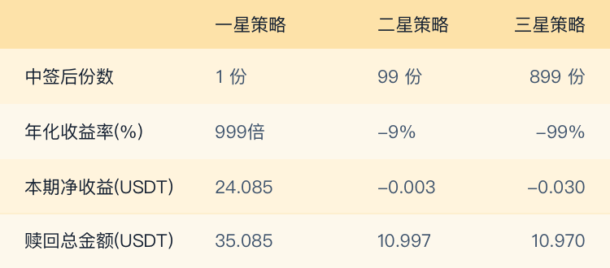
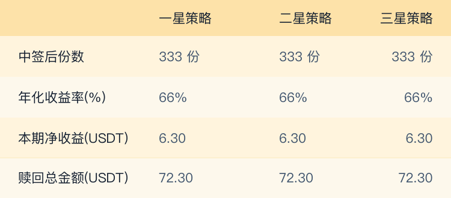

<div class="fund-buy-activity">
  <Loading v-if="loading"/>

  <div class="record-container2">
    <div class="header">
      <router-link :to="{name:'Forecast'}" class="header-title">
        <!--幸运预测活动-->
        {{$t('header_title_1')}}
      </router-link>
      <span class="spanbf">></span>
      <!--我的参与记录-->
      {{$t('header_title_2')}}
    </div>
  </div>

  <!--非ios头部-->
  <div v-show="!isApp" class="fund-buy-header-title">
    <div class="fund-buy-header-title-back-icon" @click="jumpToBack()">
      
    </div>
    <div class="fund-buy-header-title-text">基金申购</div>
  </div>


  <div class="fund-buy-name">
    <div class="fund-buy-draw">{{drawCNName}}</div>
    <div class="fund-buy-con">
      <div>
        <div class="flex">
          <div class="fund-buy-per">
            <p class="fund-buy-input-desc">每份额度</p>
            <p class="fund-buy-p">{{period.quota}} USDT</p>
          </div>
          <div class="fund-buy-per">
            <p class="fund-buy-input-desc">发行份数</p>
            <p class="fund-buy-p">{{period.copies}} 份</p>
          </div>
          <div class="fund-buy-per none-border">
            <p class="fund-buy-input-desc">基金周期</p>
            <p class="fund-buy-p">{{period.cycle}} 天</p>
          </div>
        </div>

        <div>
          <div class="fund-status flex">
            <div class="fund-with">
              <span class="fund-bak">基金开始</span>
              <span class="fund-cc">{{formatDateUitl(period.startTime)}}</span>
            </div>
            <div>
              <span class="fund-bak">基金结束</span>
              <span class="fund-cc">{{formatDateUitl(period.endTime)}}</span>
            </div>
          </div>

          <div class="fund-shou">
            <span class="fund-bak">收益类型</span>
            <span class="fund-cc">{{remainingType == 'BREAKEVEN' ? '保本型' : '非保本型'}}</span>
          </div>
          <div class="fund-shou">
            <span class="fund-bak">策略确定</span>
            <span class="fund-cc">{{'申购时获随机购买编号，赎回时根据以太坊区块 Nonce 值与购买编号的绝对差值大小，确定理财策略星级。'}}</span>
          </div>
        </div>
      </div>
    </div>

    <div class="fund-buy-con-right">

      <div class="fund-fen">购买份数</div>

      <div class="input-div flex-between">
        <input class="fund-buy-input-item-left" v-model="inputUserCopies" @input="inputUserCopiesInput"  placeholder="请输入购买份数">
        <div class="fund-buy-input-item-account flex-between">{{inputUserCopies ? toFixed(accMul((period.quota || 0),(inputUserCopies||0)),0):''}}<span class="buy-currency">{{'USDT'}}</span></div>
      </div>

      <div class="fund-buy-input-desc">剩余份数<span class="buy-currency-fen">{{remainingCopies}}</span></div>

      <!--底部按钮-->
      <div class="purchase-div" v-if="subscription" @click="toBuyFund()">申购</div>
      <div v-if="!subscription" class="purchase-div">申购中</div>
    </div>

  </div>

  <div>
    <div class="fund-buy-section-title">策略种类</div>
    <div class="fund-buy-type-of-strategy">
      <!--每种产品一张图片-->
      <!--一见倾心-->
      
      <!--三生三生-->
      
      <!--风雨同路-->
      
      <!--天长地久-->
      
    </div>
  </div>


  <PopupPrompt :popOpen="popOpen" :popClose="closePop" :popType="popType" :popText="popText" :waitTime="waitTime" />
</div>
